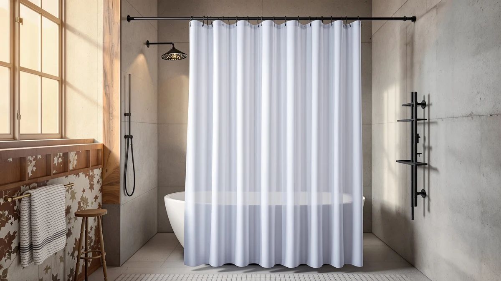

The Best Fabric Shower Curtain Liners (2026)
Prices and picks verified as of August 2026. Independent, reader-supported reviews.


Quick Answer
The Dynamene Waffle Shower Curtain 256 is our pick among the best fabric shower curtain liners we compared, with a woven waffle texture, a PEVA backing that resists splashing, and a standard 72 by 72 inch size that fits most tubs without alteration. At $17.98 it lands in the middle of this lineup's price range, and six other picks below cover cheaper, more decorative, and higher-review-count alternatives.
Our pick: Dynamene Waffle Shower Curtain 256, $17.98 Check Price on Amazon
Bottom line: our top pick is the Dynamene Waffle Shower Curtain 256 GSM Heavy Duty Fabric at $17.98. The best budget option is the THAIGEE Water-Repellent Fabric Shower Curtain Liner - Hotel at $7.99.
Things to Know Before You Buy
- Every fabric shower curtain liner here uses a Polyester and PEVA blend. That combination gives you the woven look and softer hand of fabric on the outside while a PEVA layer underneath keeps water from soaking through, unlike a true cotton liner.
- Review history varies sharply across this lineup. The THAIGEE and ALYVIA SPRING curtains each carry more than 56,000 reviews at a 4.5-star average, while the Dynamene, Serafina, and Biscaynebay picks are newer listings without an established review count yet.
- Panel sizes run from 65 to 72 inches. Most picks here use a standard 72 by 72 inch panel, but the Biscaynebay curtain drops to 65 inches long, and the Serafina and Titanker curtains use a narrower 70 inch width, so measure your stall before buying.
- Price spans from $7.59 to $19.99. The THAIGEE curtain is the least expensive pick in this guide, and the Serafina decorative sheer curtain is the most expensive, so compare the budget picks if price matters most.
- One pick trades solid color for a printed pattern. The Nautical Green Sea Turtles curtain is the only decorative print in this lineup; the other six picks are solid or textured neutrals, so factor that into your bathroom's look before choosing.
The best fabric shower curtain liners give you the woven texture and softer look of a cloth curtain while still repelling water, unlike a pure vinyl or PEVA liner that clings to your skin and yellows with age. We compared seven current listings on material blend, panel size, price, and verified owner reviews, then sorted them into a top pick, a runner-up, and picks for tighter budgets, shorter stalls, and decorative bathrooms. Every liner here uses a polyester face with a PEVA layer, so you get a fabric look without hand-washing a fully absorbent cotton panel.
Prices in this lineup span from $7.59 for the THAIGEE water-repellent curtain to $19.99 for the Serafina sheer decorative pick, so budget and style pull in different directions depending on what your bathroom needs. Panel sizes range from a compact 65 inch drop on the Biscaynebay curtain up to full 72 by 72 inch coverage on most of the other picks, and two listings, the THAIGEE and Titanker curtains, carry review counts in the tens of thousands that give buyers a deep track record to check before purchasing.
Below we break down what each of these picks is actually good for, along with the honest tradeoffs of choosing a woven look over a plain vinyl liner. If you want a fully waterproof PEVA-only option instead, or a true cotton liner with a heavier drape, our companion guides to PEVA shower curtain liners and cotton shower curtain liners cover those categories separately.
Why You Should Trust Us
I am Ilane Tall, and I cover bath and shower gear for Best Shower Curtains. For this guide to the best fabric shower curtain liners, I focused on the details that decide whether a woven-look liner is worth choosing over a plain PEVA panel: fabric weight and finish, listed size, price relative to the vinyl-only alternatives, and what verified buyers say once the curtain has been through repeated use in a humid bathroom.
We do not own or install every product we cover. Instead we research each listing closely, cross-check material claims against the manufacturer's own description, and weigh star ratings against review volume, since a high average built on a few dozen reviews tells you far less than the same average built on tens of thousands. Every price, material, and rating in this guide comes from the current Amazon listing.
How We Picked
We started with a wide list of candidates for the best fabric shower curtain liners, then narrowed the field to listings that pair a woven polyester face with a PEVA or vinyl backing, rather than a plain sheet of PEVA with no fabric texture. We cross-checked the stated material against each product's own description before including it, since "fabric" gets used loosely in curtain listings that are actually solid PEVA.
We also weighed price against panel size and review count. A curtain with tens of thousands of reviews at a strong rating, like the THAIGEE and ALYVIA SPRING picks, earned a spot even at a lower price point, while newer listings needed a distinct size, finish, or price angle to make this guide. We excluded curtains that did not list a clear panel size, since that omission makes it impossible to confirm a fit before buying.
How We Compared
We compared each of the best fabric shower curtain liners in this guide on the same facts: listed material blend, panel size, current price, and star rating and review count where the listing provides them, all pulled directly from the live Amazon listing rather than promotional copy. Where a listing described its face as fabric or cloth-like, we checked that claim against the product's own description rather than the title alone.
We also weighed review count against rating. The THAIGEE and ALYVIA SPRING picks carry the deepest evidence base in this guide, each with more than 56,000 reviews at a 4.5-star average, while the Dynamene, Serafina, and Biscaynebay curtains are newer listings we compared primarily on price, size, and stated material rather than an established review history.
Our Picks

Dynamene Waffle Shower Curtain 256
What we like
- Waffle-textured Polyester and PEVA blend gives a fabric look with a water-repellent backing
- Standard 72 by 72 inch panel fits most tubs and stalls without trimming
- It comes as a single full-size panel, so there's no need to buy a separate liner
Flaws but not dealbreakers
- This is a newer listing without the deep review history that the THAIGEE or ALYVIA SPRING curtains have built up
- At $17.98 it costs more than several PEVA-only liners, though the added fabric texture is the tradeoff
| Material | Polyester / PEVA |
| Size | 72"W x 72"L (Pack of 1) |
The Dynamene Waffle Shower Curtain 256 is the best fabric shower curtain liner in this guide because its waffle-textured Polyester and PEVA blend gives it a woven look and a softer hand than a flat vinyl panel, while the PEVA layer still keeps water from soaking through to your bathroom floor. That combination puts it ahead of the plain PEVA-only liners covered in our companion guide, since you get texture and visual interest without giving up water resistance.
At $17.98, it prices in the middle of this lineup's $7.59 to $19.99 range, and the standard 72 by 72 inch size fits most tubs and stalls without alteration. As a newer listing, it does not carry the review volume that the THAIGEE and ALYVIA SPRING picks have built up, but the waffle texture and single-panel format make it the easiest pick to recommend for most bathrooms.

Serafina Decorative Sheer Fabric Shower
What we like
- Sheer, decorative face gives a lighter, more translucent look than the opaque curtains in this guide
- PEVA backing keeps the water resistance despite the lighter, sheer fabric face
- 70 by 72 inch size fits most standard tubs and stalls
Flaws but not dealbreakers
- At $19.99 it is the most expensive pick in this lineup
- The sheer face offers less privacy than the opaque Dynamene or Titanker curtains, so it suits a stall with a door better than an open bathroom
| Material | Polyester / PEVA |
| Size | 70"W x 72"L (Pack of 1) |
The Serafina Decorative Sheer Fabric Shower is our runner-up because it takes a different approach than the opaque, textured curtains covered elsewhere in this guide: a sheer, decorative face over a PEVA backing. That gives it a lighter, softer look in the bathroom, without giving up the splash resistance you get from a Polyester and PEVA blend.
At $19.99, it is the priciest pick in this lineup, roughly two dollars more than the Dynamene top pick. Its 70 by 72 inch size runs slightly narrower than the Dynamene's full 72 inch width, so measure your stall before buying. If a decorative, translucent look matters more to you than opacity, choose this pick over the more solid, textured options here.

THAIGEE Water-Repellent Fabric Shower Curtain
What we like
- At $7.59, it is the least expensive pick in this entire guide
- 4.5-star average across 56,787 reviews gives it by far the deepest evidence base here
- Standard 72 by 72 inch size fits most tubs without alteration
Flaws but not dealbreakers
- It uses a simpler, more basic fabric finish than the waffle texture on the Dynamene pick or the sheer face on the Serafina curtain
- Its price and popularity mean it sells in high volume, so color and finish can vary slightly between batches
| Material | Polyester / PEVA |
| Size | 72x72 |
The THAIGEE Water-Repellent Fabric Shower Curtain undercuts every other pick in this guide on price, at $7.59, while carrying the deepest review history of any product here. Its 4.5-star average across 56,787 verified reviews gives buyers a large sample size to judge consistency and durability against, something the newer listings in this lineup can't yet offer.
The 72 by 72 inch panel fits most standard tubs and stalls, and the Polyester and PEVA blend repels splashing the same way the pricier picks in this guide do. Owners consistently note that it holds up well for the price, though the fabric finish is more basic than the waffle texture or sheer decorative options covered above. If review volume and price matter most to you, start here.

ALYVIA SPRING Waterproof Fabric Shower
What we like
- 4.5-star average across 56,746 reviews nearly matches the THAIGEE pick's review depth
- At $9.98, it remains one of the least expensive picks in this guide
- Standard 72 by 72 inch size fits most tubs and stalls
Flaws but not dealbreakers
- At $2.39 more than the THAIGEE curtain, it doesn't offer a clear functional advantage to justify the difference
- Like the THAIGEE pick, its fabric finish is more basic than the textured or sheer options covered above
| Material | Polyester / PEVA |
| Size | 72x72 |
The ALYVIA SPRING Waterproof Fabric Shower is our budget pick because it comes within a fraction of a star and a few dozen reviews of the THAIGEE curtain's review history, at a still-low $9.98 price. Its 4.5-star average across 56,746 verified reviews puts it in a near tie with THAIGEE for the deepest evidence base in this guide.
The 72 by 72 inch panel and Polyester and PEVA blend match the specs of several other picks here, so the choice between ALYVIA SPRING and THAIGEE largely comes down to current price and which listing is in stock. Reviewers consistently note reliable water resistance at this price point, making either pick a safe budget choice for most bathrooms.

Biscaynebay Fabric Shower Curtain Short
What we like
- 65 inch length is the shortest drop in this lineup, cutting excess fabric pooling on the tub or shower floor
- 72 inch width still fits a standard alcove
- Polyester and PEVA blend keeps the water resistance of the longer curtains in this guide
Flaws but not dealbreakers
- The 65 inch length rules it out for a taller shower or a walk-in tub that needs more drop
- This is a newer listing without the review history the THAIGEE or ALYVIA SPRING curtains have built up
| Material | Polyester / PEVA |
| Size | 72"W x 65"L (Pack of 1) |
The Biscaynebay Fabric Shower Curtain Short solves a specific sizing problem: most fabric shower curtain liners in this guide use a full 72 inch drop, which pools excess fabric on the floor of a shorter stall or stand-up shower. At 65 inches long, it trims that overhang while keeping the standard 72 inch width that fits most alcoves.
At $12.59, it prices in the middle of this lineup, and the Polyester and PEVA blend matches the water resistance of the longer curtains here. If your shower is shorter than a standard tub, or you simply prefer less fabric pooling at the bottom, this pick fits better than the 72 inch options covered above; see our stand-up shower liner picks for more options sized this way.

Titanker Waterproof Fabric Shower Curtain
What we like
- 4.6-star average is the highest rating of any pick in this guide
- At $8.38, it prices close to the THAIGEE and ALYVIA SPRING budget picks
- 8,902 reviews give it a solid, if smaller, evidence base than the two cheapest picks
Flaws but not dealbreakers
- Its 70 inch width runs 2 inches narrower than the standard 72 inch panels in this lineup
- Review count is smaller than THAIGEE's or ALYVIA SPRING's, though the rating itself is higher
| Material | Polyester / PEVA |
| Size | 70x72 |
The Titanker Waterproof Fabric Shower Curtain carries the highest star rating in this guide, at 4.6 stars across 8,902 reviews, edging out every other pick here including the two higher-volume budget options. At $8.38, it prices close to the cheapest curtains in this lineup, so you get a top rating without paying a premium.
Its 70 by 72 inch size runs 2 inches narrower than the standard panels covered above, which matters most if your rod spans a wider alcove. Reviewers consistently note strong water resistance and color retention after repeated washing, making this a solid pick if rating matters more to you than raw review volume.

Nautical Green Sea Turtles Beach
What we like
- 4.7-star average is the highest of any pick in this entire guide
- Printed sea turtle design is the only patterned option among these seven picks
- Standard 72 by 72 inch size fits most tubs and stalls
Flaws but not dealbreakers
- The coastal print won't suit every bathroom's decor the way a solid or textured neutral would
- At $12.99 it costs more than the THAIGEE, ALYVIA SPRING, or Titanker picks, despite a similar Polyester and PEVA build
| Material | Polyester / PEVA |
| Size | 72x72 |
The Nautical Green Sea Turtles Beach curtain stands apart from the rest of this lineup on looks alone: every other pick here uses a solid or textured neutral face, while this one prints a sea turtle design across the same Polyester and PEVA fabric blend. It also carries the highest rating in this guide, at 4.7 stars across 5,753 reviews.
At $12.99, it costs a few dollars more than the cheaper solid-color picks above, though its rating suggests owners are satisfied with the tradeoff. The standard 72 by 72 inch size fits the same tubs and stalls as the other full-length curtains in this guide, so sizing isn't a factor in choosing this pick over a solid alternative; see our patterned liner picks for more printed options.
Quick Comparison
| Product | Material | Price | Rating | Best for | Get it |
|---|---|---|---|---|---|
| Dynamene Waffle Shower Curtain 256 | Polyester / PEVA | $17.98 | 4 | Waffle-textured fabric liner for standard tubs | View on Amazon → |
| Serafina Decorative Sheer Fabric Shower | Polyester / PEVA | $19.99 | 4 | Sheer decorative fabric liner | View on Amazon → |
| THAIGEE Water-Repellent Fabric Shower Curtain | Polyester / PEVA | $7.59 | 4.5 | Cheapest pick, 56,787 reviews | View on Amazon → |
| ALYVIA SPRING Waterproof Fabric Shower | Polyester / PEVA | $9.98 | 4.5 | Budget pick, 56,746 reviews | View on Amazon → |
| Biscaynebay Fabric Shower Curtain Short | Polyester / PEVA | $12.59 | 4 | Shorter 65-inch drop for stalls | View on Amazon → |
| Titanker Waterproof Fabric Shower Curtain | Polyester / PEVA | $8.38 | 4.6 | Highest rating, 4.6 stars | View on Amazon → |
| Nautical Green Sea Turtles Beach | Polyester / PEVA | $12.99 | 4.7 | Highest rating, printed pattern | View on Amazon → |
The Competition
Among the four "Also Great" picks in this guide, the case for choosing one over another comes down to a single differentiator rather than a broad quality gap. The Titanker curtain carries the highest star rating of the group at 4.6 stars, but its 70 inch width runs narrower than the Biscaynebay and Nautical Green picks. The Nautical Green Sea Turtles curtain rates even higher, at 4.7 stars, but it is the only printed design here, so it only fits bathrooms that want a coastal look rather than a neutral panel.
We passed over generic fabric-look curtains with no stated material blend or panel size in their listings, since that omission makes it impossible to confirm a proper fit before buying. Between the THAIGEE and ALYVIA SPRING budget picks, the roughly $2 price gap and near-identical review counts mean either is a safe choice, and we ranked THAIGEE slightly ahead mainly on its lower current price. After weighing material, size, price, and review history across all seven picks, the best fabric shower curtain liner for most bathrooms remains the Dynamene Waffle Shower Curtain 256, for its balance of woven texture, water resistance, and standard sizing.
Frequently Asked Questions
Are fabric shower curtain liners actually waterproof?
Most are water-repellent rather than fully waterproof. Every pick in this guide uses a Polyester and PEVA blend, where the woven fabric face gives you a softer look while the PEVA layer keeps water from soaking through during normal use. If you want a fully waterproof, vinyl-style barrier instead, see our PEVA shower curtain liner picks, which skip the fabric face entirely.
What size fabric shower curtain liner do I need?
Measure your tub or stall alcove before choosing. Most picks in this guide use a standard 72 by 72 inch panel, but the Biscaynebay curtain drops to a 65 inch length for shorter stalls, and the Serafina and Titanker curtains use a narrower 70 inch width. If your shower needs more coverage than any of these offer, check our extra-wide liner picks instead.
Do fabric shower curtain liners need a separate liner behind them?
No, not with the picks in this guide. Every curtain here already pairs a fabric-look Polyester face with a PEVA backing, so it resists splashing well enough to hang on its own in most showers. That's different from a true cotton liner, like the one covered in our cotton shower curtain liner guide, which typically needs a separate waterproof liner behind it.